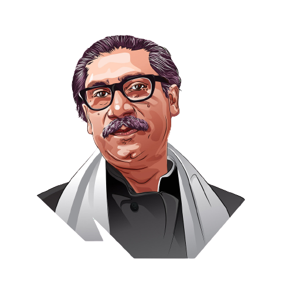

Father of the Nation
Sheikh Mujibur Rahman
17 March 1920 - 15 August 1975
Who was Sheikh Mujib?
Sheikh Mujib, shortened as Mujib, was the founder of independent Bangladesh. He was the former President of Bangladesh and later became the Prime Minister of Bangladesh for four years, from 1971 to 1975. However, Mujib was assassinated on August 15, 1975.
Sheikh Mujib was the man who united the whole of Bangladesh to fight against the then oppressive West Pakistan. He is the man who worked behind the independence of Bangladesh. His popularity and contribution to the country, for the people, named him “Bangabandhu,” which means “Friend of Bengal" in English terms. Indeed Mujib was an altruistic friend of all Bangladeshis.

However, Bangabandhu was the leading figure of the county as well as the political party Awami League, which was an East Pakistan (currently Bangladesh) based party. Certainly, Sheikh Mujibur Rahman gets the credit for the liberation war movement, which eventually gets us freedom from West Pakistan. As the then Pakistani government started discrimination towards East Pakistan, Mujib became the active voice to protest all the injustice. However, he had to go to jail multiple times due to his bravery.
The birth of Bangladesh was impossible without Bangabandhu. Hence, Mujib is considered as the 'Father of the Nation' which is termed 'Jatir Pita' in Bengali.
Besides his contribution to the country, Mujib was a family man too. Mujibur Rahman married his paternal cousin Fazilatunnesa when he was 13. Together they had five children, Sheikh Hasina, Sheikh Rehana, Sheikh Kamal, Sheikh Jamal, and Sheikh Rasel.
Early Political Activity
Mujib became politically active in 1940 after joining the All-India Muslim Students Federation. Later in 1943, he switched to the Bengal Muslim League. In 1946, he became the general secretary of the Islamia College Students Union. He obtained the BA degree in 1947. During that time, Mujib conducted his political activity under Suhrawardy. Eventually, he became the most prominent student political leader.
Activity During the Language Movement
On 21 March 1948, Muhammad Ali Jinnah imposed Urdu as the state language for East Pakistan. Mujib immediately started the movement against this decision. However, before the Jinnah's declaration, there was some chaos against the Muslim League, which eventually led to a Dhaka strike on 11 March 1948.
Sheikh Mujib and other student protesters were arrested during the strike and later released on 15 March. After that, he was in and out of jail multiple times. However, he received two years of imprisonment in early 1950 because of his leadership role.
Despite staying in Jail, Bangabandhu organized protests by issuing instructions from the Jail, which turned to the state Bengali Language Movement. Mujib was released on 27 February 1952.
Foundation of the Awami League
Mujib joined with Maulana Bhashani and Yar Mohammad Khan to form Awami Muslim League and left the Muslim League. Later he was elected as the joint secretary of the East Bengal unit. After that, Bangabandhu worked on expanding the organization to the grass-root level.
Mujib was elected as agriculture minister during A. K. Fazlul Huq's government. However, he was arrested again as he worked on organizing a protest against the central government's decision to dismiss the United Food Ministry. However, this time he was arrested briefly. Later he served as the second Constituent Assembly of Pakistan from 1955 to 1958.
Six-point movement
After Suhrawardy's death in 1963, Sheikh Mujib became the head of the Awami League, the largest political party in Pakistan. Eventually, Mujib became the key leader to stand against President Ayub Khan's Basic Democracies plan.
In 1964's election, Sheikh Mujib supported Fatima Jinnah instead of Ayub Khan, which cost him one-year of imprisonment. However, during these days, the oppression of the Bengali people increased exponentially. Continual denial of democracy led Mujib to proclaim 6 points titled 'Our Charter of Survival'.
---------------------------------------------------------------------------------------------------------------------------------------------------------------------------------------------------------------------------------------------------------------------------------------------------------------------------------------------
--------------------------------------------------------------------------------------------------------------------------------------------------------------------------------------------------------------------------------------------------------------------------------------------------------------------------------
Recognitions
After the independence, Mujib was featured in Time Magazine. In 1973 at a Non-Aligned Summit, Cuban Leader Fidel Castro entitled Mujib's personality as the Himalaya. Sheikh Mujib's speech on 7 March 1971 was recognized as the world's documentary heritage by UNESCO.
Bangabandhu Sheikh Mujibur Rahman could not breathe for a long time in the independent country. On 15 August 1975, Father of The Nation was brutally assassinated by a group of junior army officers. They did not even spare Mujib's family and his personal staff.